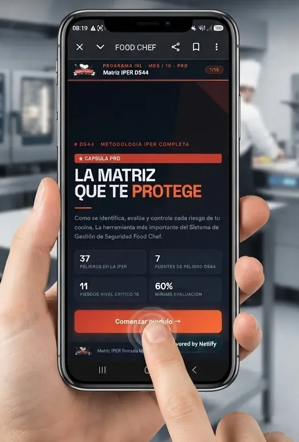

Inicio › Demo SafetyCoach Digital
Demo · Empresa ficticia
Demo Pyme SpA
Pyme de 45 trabajadores con cocina y taller de mantención. Así se ve, desde el celular del trabajador, lo que en tu empresa hoy está en papel: firmado, con folio y listo para cualquier fiscalización.
Esta es una demostración. Los datos que ingreses se guardan solo en este navegador y no se envían a nadie.
Pruébalo ahora · dentro del celular
Cápsulas digitales con firma digital y diploma
Así lo vive tu trabajador: elige la cápsula, mira el video, responde, completa sus datos, firma con el dedo y recibe su diploma con código QR de verificación. Todo queda registrado para tu empresa.
- Elige una opción en la carátula
- Presiona el video
- Responde 3 preguntas
- Completa tus datos y firma
- Descarga tu diploma con QR
Ejemplo activo: cápsula Ley Karin. Empresa y datos ficticios; tu versión lleva tu logo, tus riesgos y tus videos.

● DS 44 · Programa digital
¿Qué quieres probar?
● Ley 21.643 · Ley Karin
★ CÁPSULA PROComunícate
con respeto
Qué es el acoso laboral, cómo prevenirlo y dónde denunciar. Video, preguntas y diploma.
Módulo — Ley Karin
Ley 21.643 (Ley Karin) — Comunícate con respeto · Ver en YouTube ↗
Presiona el video para comenzar.
Responde (mínimo 60%)
1. Burlas reiteradas a un compañero, ¿pueden ser acoso laboral?
2. Si presencias una situación de acoso, debes…
3. ¿La Ley Karin aplica también a la violencia de clientes o terceros?
Completa tus datos y firma
Para ver la demo, cuéntame de tu empresa
Así te muestro lo que más sirve a tu operación. Toma 1 minuto.
Tus datos son confidenciales y solo se usan para contactarte sobre tu evaluación.
Demo Pyme SpARUT 76.000.000-0 · empresa ficticia
Documentos de ingreso
El trabajador abre cada documento, lo lee y firma una sola vez. Cada documento queda con su propio registro, folio y código de verificación.
Reglamento Interno (RIOHS) Art. 156 CT · DS 44 Art. 56
Declaro haber recibido en forma gratuita una copia del Reglamento Interno de Orden, Higiene y Seguridad, y asumo la responsabilidad de leerlo y cumplir sus obligaciones, prohibiciones y normas.
Información de riesgos laborales (IRL) DS 44
Tus riesgos: caídas por pisos húmedos, cortes con cuchillos y rebanadoras, quemaduras con hornos y vapor, manejo manual de carga y atrapamiento en máquinas. Medidas: calzado antideslizante, guante anticorte, guantes térmicos, máximo 25 kg por persona y nunca intervenir una máquina en movimiento.
Procedimiento de trabajo seguro (PTS) Cuchillos y rebanadora
Corta siempre alejando el filo del cuerpo, transporta el cuchillo con la punta hacia abajo y nunca lo dejes en agua jabonosa. Antes de limpiar la rebanadora: desenchúfala, deja la perilla en cero y usa guante anticorte.
Plan de emergencias Vías de evacuación y punto de encuentro
Ante una alarma, detén tu trabajo, corta el gas si es seguro hacerlo y evacúa sin correr por la vía señalizada hasta el punto de encuentro del estacionamiento.
0 de 4 documentos leídos
Declaro haber recibido, leído y comprendido los documentos anteriores, sus riesgos, medidas preventivas y métodos de trabajo correctos.
Cápsula M03 · Prevención de cortes
Interactiva, con tiempo mínimo, evaluación, intentos y firma. ⏱ 0 s
Evaluación · aprobación con 3 de 4 · intento 1
Declaro haber realizado personalmente esta capacitación y comprendido su contenido.
Entrega de EPP
Registro de entrega con firma: qué se entregó, talla, cantidad, motivo y certificación. Ley 16.744 Art. 68 · DS 594 Art. 53
Declaro haber recibido gratuitamente los elementos de protección personal indicados, en buen estado, y haber sido instruido en su uso, cuidado y reposición. Me comprometo a usarlos durante toda la tarea.
Inspección de máquina
Lista de verificación construida desde la matriz de riesgos. Los ítems STOP detienen la máquina. Res. Ex. 341 ISP (PROSEMEH) · DS 44
Registros e indicadores
Lo que ve la gerencia o el prevencionista, en línea. Toca Ver hoja para ver el registro tal como se entrega.
El entregable
Tu carpeta digital: así queda cada registro
Mismo formato que entregamos a nuestros clientes: código, versión, folio, firma validada y huella digital. Con tu logo. Lista para imprimir o guardar en PDF.
¿Lo quieres para tu empresa?
Lo hacemos a la medida de tu operación: tus riesgos, tus equipos, tus cargos y tu logo.